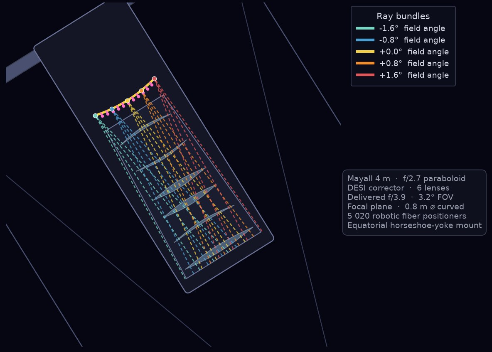
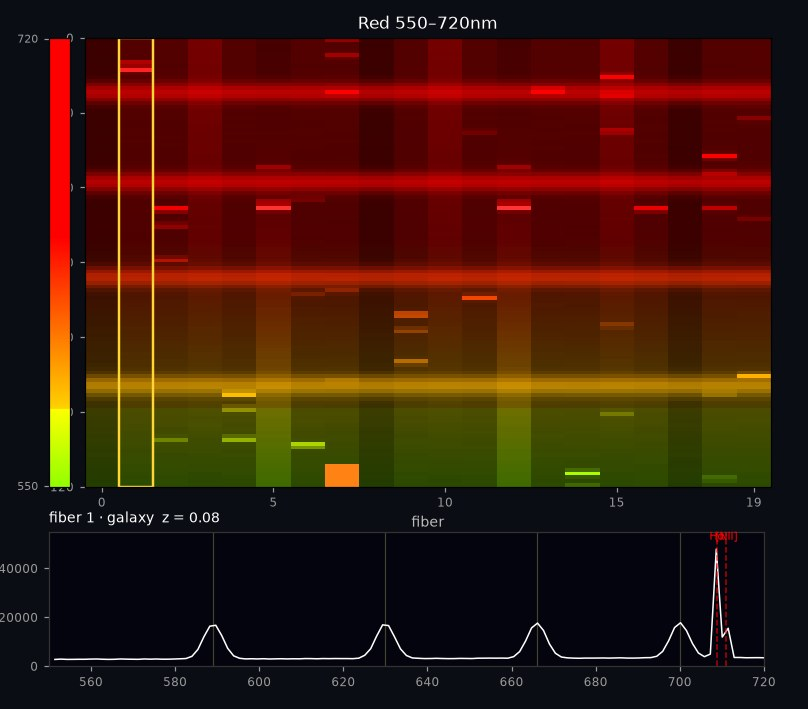

How DESI Works
The light path from galaxy to CCD — the Mayall telescope, 5,000 robotic fiber positioners, and three spectrograph arms
Each DESI measurement begins as a stream of photons that left a galaxy billions of years ago and ends as a distribution of electrons stored in a charge-coupled device. The distribution of electrons across the face of the CCD is proportional to the wavelength of the light at the time it reaches DESI, which has been redshifted by the expansion of the universe during its long travel time. This page follows that path through the instrument.
The telescope
The Mayall 4-meter telescope on Kitt Peak was built in 1973 and has been rebuilt around DESI: a new corrector widens the usable field, and at the focus sits a focal plane carrying 5,000 optical fibers, each on its own robotic positioner. Before an exposure the robots place every fiber on a chosen target to a few microns. The petals holding those positioners were machined at Boston University, and the positioners were prototyped at BU, along with the jigging needed for the assembly work carried out at the University of Michigan.
![Scale drawing of the Mayall 4-meter telescope tilted at 32 degrees, the Kitt Peak latitude, on its equatorial horseshoe-yoke mount. Five ray bundles spanning a 3.2 degree field of view, each drawn in a different color to mark its field angle rather than any wavelength, enter the tube, reflect from the primary mirror, pass through the six-element DESI corrector and converge on the curved focal plane, which is labeled as having fibers pointing downward. A panel lists the specifications: 4 meter f/2.7 paraboloid, six-lens corrector, delivered f/3.9, 0.8 meter curved focal plane, 5,020 robotic fiber positioners.](img/instrument/mayall-raytrace.jpg)
By J. W. Rohlf. Source: mayall_desi_raytrace.py (Python, matplotlib) — interactive when run locally, with a tilt slider and a focal-plane zoom.

That curvature has a direct consequence for the hardware. Each petal carries 500 fiber positioners and, because the focal surface curves, no two of their sockets sit at the same angle — every one is precision machined to its own orientation, so that the fiber it holds points along the local normal to the surface. Ten petals, each with 500 individually angled sockets, make up the 5,000.
David Kirkby's 360° panoramas of the DESI focal plane show the assembled hardware in place on the telescope.
Each fiber has a core 107 µm across, subtending about one arcsecond on the sky — which is why a DESI spectrum samples the central arcsecond of a galaxy rather than all of its light. The fibers carry the light out of the telescope to ten spectrographs housed in a temperature-controlled room below.
Assigning the fibers
Before any of that happens, something has to decide where each of the 5,000 fibers points. A single field contains far more candidate targets than there are fibers — about 30,000 against 5,000 — and the positioners cannot reach arbitrarily far or overlap one another. Assignment is therefore a scheduling problem, solved by priority: quasars first, then emission-line galaxies, luminous red galaxies, bright galaxies and finally standard stars.
Assignment revealed one priority class at a time. Left: the whole
focal plane, 5,000 positioners against 30,613 candidate targets, colored by what
each fiber was given. Center: one petal, with the two-arm robots
drawn individually — each can only reach targets inside its own patrol disk, and
neighbors that would collide are rejected. Right: completeness by
class. Quasars are rare, so almost a quarter of them get a fiber; emission-line
galaxies are so numerous that only 15% do, and they still take 2,845 of the
fibers. This is why the survey visits each point on the sky more than once.
Animation by J. W. Rohlf. Source:
desi_focal_plane.py (Python, matplotlib,
scipy) — interactive when run locally, with sliders for patrol radius, collision
distance and target density.
The priority order is a cosmological choice, not an engineering one. Quasars go first because they are the scarcest tracer and the only route to the Lyman-α forest; stars go last because they are calibration rather than signal. Which tracer a given fiber ends up observing is decided here, seconds before the shutter opens.
The light path
From galaxy to CCD, light reaches the Mayall primary, passes
the corrector to the focal plane, enters a fiber, and is collimated; dichroic
D1 peels off the blue, D2 splits red from
near-infrared, and each arm is dispersed by its own grating onto its own
detector — so all three CCDs are illuminated at once, covering 360 to
980 nm in a single exposure.
Animation by J. W. Rohlf; a still of the completed path appears in
Results From DESI, DPF 2026.
Source: desi_light_path_ltr.py
(Python, matplotlib).
Inside a spectrograph
Five hundred fibers enter each spectrograph through a V-groove block that holds them in a precise line, and a collimator turns the diverging beams into parallel ones. Then the light is divided. The first dichroic, D1, reflects the blue and passes everything else; the second, D2, splits what remains into red and near-infrared. Each of the three beams meets its own grating and its own CCD:
- CCD B
- 360–593 nm — the blue arm, where [O II] appears for the emission-line galaxies
- CCD R
- 566–772 nm — the red arm, carrying Hα at low redshift and the 4000 Å break at z ≈ 0.8
- CCD NIR
- 747–980 nm — the near-infrared arm, which sets the upper redshift reach of every galaxy sample
Splitting the beam is what makes the survey possible. A single detector covering 360 to 980 nm would have to compromise either resolution or efficiency somewhere across that range; three optimized arms do not. It is also why the tracer samples have the redshift limits they do — each is bounded by the wavelength at which its defining feature runs off the end of the third CCD.
What lands on a CCD
Each fiber occupies its own strip of the CCD; in this view, wavelength runs up the frame. Each exposure records 500 spectra side by side on each CCD.

By J. W. Rohlf. Source: ccd_mapping.py (Python, matplotlib) — interactive when run locally, with sliders for line strength, continuum, sky level and read noise.
Reading it out
Readout is the last thing that happens inside the instrument, and it is not instantaneous. A CCD holds charge, not numbers, and turning one into the other means moving that charge physically across the chip to a single amplifier at the edge. The readout electronics do this row by row, and whatever they add along the way — the read noise — sets the floor beneath every spectrum DESI records.
Charge does not stay on the chip. Clocking voltages march it step by step
towards a serial register at the edge, where it is amplified and digitized one
packet at a time — so the frame empties progressively, as here. The yellow box
marks the fiber whose extracted spectrum is shown below; watch it change as each new
column arrives, and the cosmic ray pass through it as a flat-topped block that no
real photon could produce.
By J. W. Rohlf. Source:
ccd_mapping.py.
Subtracting the sky
A digitized frame is not yet a useful measurement until the night sky background, glowing in OH bands that are hundreds of times brighter than the galaxies behind them, is removed. This is why some fibers are deliberately pointed at dark sky — they measure what has to be subtracted.
A 600-second exposure accumulating photon by photon, over 738–756 nm.
Top: the raw galaxy fiber — four bright OH sky lines, with the
[O II] doublet at 746.2 and 746.8 nm barely a ripple beside the
747.2 nm sky line. Second: the sky model, the median of ten
sky fibers, with its ±1σ uncertainty. Third: the difference —
the doublet climbing out of the noise as the exposure grows, against the true
noiseless signal in red. Bottom: the residual, which should stay
inside the ±1σ envelope if the subtraction is unbiased. Watch the signal-to-noise
figures: by the end each line is above 90.
Animation by J. W. Rohlf. Source:
desi_sky_subtraction.py
(Python, matplotlib).
Elsewhere on this site
- Tracers of the expansion history what the instrument is pointed at, and why
- Baryon acoustic oscillations what the redshifts are then used to measure
- Photographs the cryostats and focal-plane hardware being built
- Hardware posters the instrument in detail
More to come: the same talk includes simulations of structure formation, of the baryon acoustic oscillation feature, and of redshift-space distortions, which will be added here.